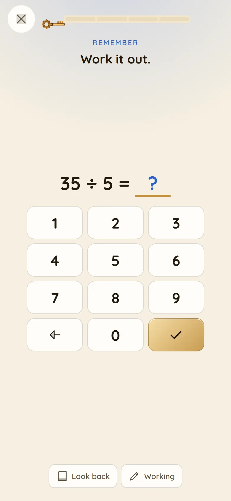
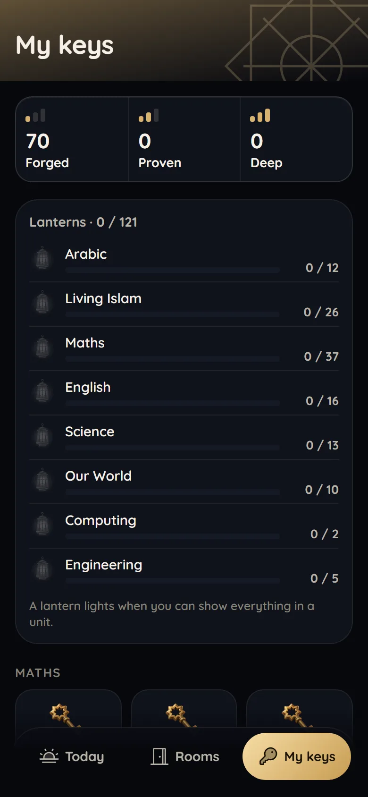
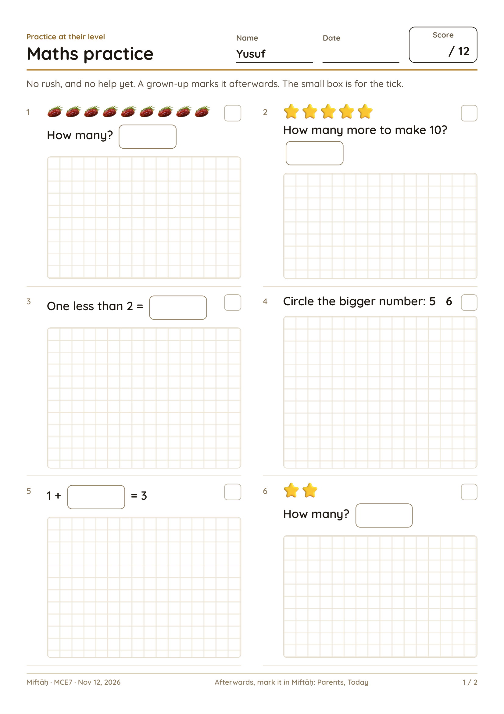
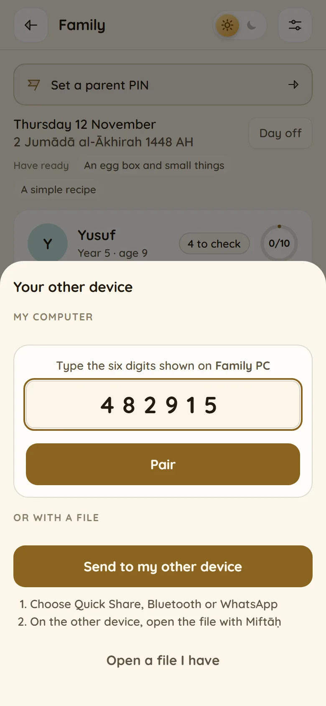

An Islamic homeschool
ٱقْرَأْ بِٱسْمِ رَبِّكَ ٱلَّذِى خَلَقَ
Al-ʿAlaq 96:1
From two to eighteen.
In English and العربية. On the phone and the computer.

Every morning
One balanced day.

Taught, not just tested.
A lesson counts only when the child shows it alone.
Five stages. One app.
The design, the pace and the voice grow with the child.

What they learn, stays.
Checked again after a break, and again after weeks.

✓ Marked
Paper, or the screen.
Made fresh from what they know today. Written by the child, marked by a grown-up.
For parents
The whole family,
at a glance.
at a glance.
Who did what, what they remember, and where they are stuck.
Made for the computer, too.
The Windows edition: the sum on the left, the answer on the right, a side rail and the keyboard.
Ctrl+K
Go anywhere.
Any child, subject, lesson or tool, from one box.

Phone and computer.
One record.
One record.
Six digits on your home Wi-Fi. No account, no cloud.
English. العربية.
Day and night.
Day and night.
ٱلَّذِى عَلَّمَ بِٱلْقَلَمِ
0
Checks on every build
The Qurʾān · TanzilThe Clear QuranḤiṣn al-Muslim
Every word, from a verified source.
No adverts. No account. Nothing leaves your home.
Miftāḥ
Free. Private. Offline.
Android
Windows
bashyr18.github.io/miftah-app/guide
Open source · Built as ṣadaqah jāriyah